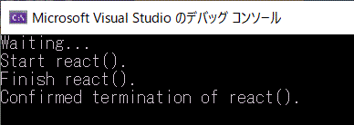

std::thread は boost::thread から標準に採用されたライブラリです。C++03 ではスレッドライブラリがなかったのでWin32やpthreadを使うことになります。Win32の_beginthreadを使用した場合はクラスのメソッドを呼ぶ場合に static なメソッドなどをいったん間にかませる必要があるのですが、std::threadはこの手順が不要でクラスメソッドを一発起動できて便利です。
類似の機能として std::async という機能があります。個人見解としては、std::thread を使わずに std::async へすべて統一して使用するほうが良い、と考えます。詳細は std::async を参照ください。
まずは一番シンプルな実装から試します。
[環境]
| コンパイラ : | Visual Studio 2019 pro., | Version 16.6.0 |
| OS: | Windows10 home, | Version 1909 |
[プログラムソース]
#include <iostream> // cout, endl, EXIT_SUCCESS
#include <thread> // thread
#include <chrono> // chrono::milliseconds
using namespace std;
void PrintHello()
{
const size_t RepeatCount = 5 ;
for ( size_t i=0; i<RepeatCount; ++i ){
cout << "Hello " << endl;
this_thread::sleep_for( chrono::milliseconds(500) ); // 500ms 待機
}
}
void PrintWorld()
{
const size_t RepeatCount = 5 ;
for ( size_t i=0; i<RepeatCount; ++i ){
cout << "World! " << endl;
this_thread::sleep_for( chrono::milliseconds(500) ); // 500ms 待機
}
}
int main(int argc, char* argv[])
{
// 引数無し関数をマルチスレッドで実行
thread thr_hello(PrintHello);
thread thr_world(PrintWorld);
// スレッド終了待ち
thr_hello.join();
thr_world.join();
return EXIT_SUCCESS;
}
引数付きの関数実行を同じく std::thread を使ったマルチスレッドで実行する方法を記載します。
thread
には関数ポインタを渡すのですが、オーバーロードした関数がある場合の記載方法が難しいので、これについても合わせて記載します。結論から言うとキャストで関数詳細情報を記載すればできるようです。
同様に、lambda式での起債も併記します。
[プログラムソース]
#include <iostream> // EXIT_SUCCESS
#include <thread> // thread
#include <chrono> // chrono::milliseconds
#include <string>
#include <tchar.h> // _TCHAR
using namespace std;
void PrintString( const char* str )
{
const size_t RepeatCount = 5 ;
for ( size_t i=0; i<RepeatCount; ++i ){
cout << str << endl;
this_thread::sleep_for( chrono::milliseconds(500) ); // 500ms待機
}
}
#if 0 // 関数オーバーロードの実行テストをするなら 0→1 へ変更
// 関数オーバーロードの試験用に、同じ関数名で引数違いの関数を準備
void PrintString( const string str )
{
const size_t RepeatCount = 5 ;
for ( size_t i=0; i<RepeatCount; ++i ){
cout << str << endl;
this_thread::sleep_for( chrono::milliseconds(500) ); // 500ms待機
}
}
#endif
int main(int argc, char* argv[])
{
// 引数付き関数をマルチスレッドで実行
{
#if 1 // 一般的な記載
thread thr_hello( PrintString, "Hello " );
thread thr_world( PrintString, "World! ");
thread thr_space( PrintString, "Space ") );
#endif
#if 0 // 関数をオーバーロードしている場合。キャストによる具体指示が必要。記載が少々難解。
thread thr_hello( static_cast<void(*)(const char*)>(PrintString), "Hello " );
thread thr_world( static_cast<void(*)(const char*)>(PrintString), "World! ");
thread thr_hide ( static_cast<void(*)(const string)>(PrintString), string("hide"));
thread thr_space( std::bind(static_cast<void(*)(const char*)>(PrintString), "Space ") );
#endif
#if 0 // lambda式で記載する場合。頑張ってキャスト式を書くよりも、こっちの方がシンプルかも。
thread thr_hello([=]{
PrintString("Hello ");
});
thread thr_world([=]{
PrintString(string("World! "));
});
thread thr_space([=]{
PrintString("Space ");
});
#endif
thr_hello.join();
thr_world.join();
// thr_hide.join();
thr_space.join();
}
return EXIT_SUCCESS;
}
クラスメンバ関数をスレッド起動する方法です。クラスメソッドなので第一引数にインスタンス(this)が必要です。このため下記サンプルでは &hello, &world を引数で渡しています。
[プログラムソース]
#include <iostream> // std::cout, std::endl
#include <string> // string
#include <thread> // thread, this_thread::sleep_for
#include <chrono> // chrono::millisecond
using namespace std;
class PrintMessage {
private:
const string strMessage_ ;
public:
PrintMessage( string strMessage ) : strMessage_(strMessage)
{
}
void run()
{
const size_t RepeatCount = 5 ;
for ( size_t i=0; i<RepeatCount; ++i ){
std::cout << strMessage_ << endl;
this_thread::sleep_for( chrono::milliseconds(500) ); // 500ms 待機
}
}
};
int main(int argc, char* argv[])
{
// メンバ関数をマルチスレッドで実行(クラス外部からの起動)
{
PrintMessage hello("Hello ");
PrintMessage world("World! ");
thread thr_hello( &PrintMessage::run, &hello );
thread thr_world( &PrintMessage::run, &world );
thr_hello.join();
thr_world.join();
}
}
クラスメンバ関数をスレッド起動する方法です。クラスメソッドなので第一引数にインスタンス(this)が必要です。このため下記サンプルでは
this を引数で渡しています。
[プログラムソース]
#include <iostream> // cout, endl
#include <string> // string
#include <thread> // thread, this_thread::sleep_for
#include <chrono> // chrono::millisecond
using namespace std;
class PrintMessage {
private:
const string strMessage_ ;
thread thr_ ;
public:
PrintMessage( string strMessage ) : strMessage_(strMessage)
{
thread thr( &PrintMessage::run, this );
thr_.swap( thr ) ;
thr_ = thread( &PrintMessage::run, this);
}
void run()
{
const size_t RepeatCount = 5 ;
for ( size_t i=0; i<RepeatCount; ++i ){
cout << strMessage_ << endl;
this_thread::sleep_for( chrono::milliseconds(500) );
}
}
void join()
{
thr_.join();
}
};
int main(int argc, char* argv[])
{
// メンバ関数をマルチスレッドで実行(クラス内部からの起動)
{
PrintMessage hello("Hello ");
PrintMessage world("World! ");
hello.join();
world.join();
}
}
一時停止状態のシステムスレッドを作成してみます。
すなわち、スレッドで何かを処理する時が来たらすぐに開始できるようにあらかじめスレッドを作成しておき、作成のスレッドのオーバーヘッドによる遅延を回避する例です。または、実行開始前にスレッドに何かしらのせえっていを行う必要があるため一時停止状態のスレッドを作成する場合もあるでしょう。
スレッドを一度だけ一時停止状態にしたい場合、void future を用いるのが妥当な選択です。この技法の要点を以下に示します。
[評価環境]
| コンパイラ : | Visual Studio 2019 pro., | Version 16.3.10 |
| OS : | Windows10 home, | Version 1909 |
[プログラムソース]
#include <iostream>
#include <thread> // std::thread
#include <future> // std::async
using namespace std;
int react(int count)
{
cout << "Start react()." << endl;
for (int i = 0; i < count; ++i) {
this_thread::sleep_for(chrono::milliseconds(1000));
}
cout << "Finish react()." << endl;
return 1;
}
int main()
{
promise<void> p;
int wait_count = 5;
thread t([=, &p]
{
p.get_future().wait(); // p.set_value() の実行まで待機
return react(wait_count); // react() を実行
});
this_thread::sleep_for(chrono::seconds(1)); // 何か・・・をしてから、
p.set_value(); // スレッドを起動します。
cout << "Waiting..." << endl;
t.join();
cout << "Confirmed termination of react()." << endl;
}
[実行結果]

本ページの情報は、特記無い限り下記 MIT ライセンスで提供されます。
| 2022-08-28 | - | ページデザイン更新 |
| 2020-06-01 | - | 誤植修正 |
| 2019-11-20 | - | 「5. 一時停止状態のスレッドを作る」の章を追加 |
| 2013-09-01 | - | 新規作成、（boost::thread の記述をベースに修正） |